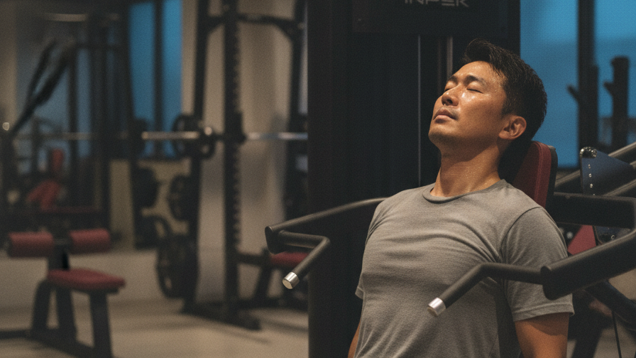
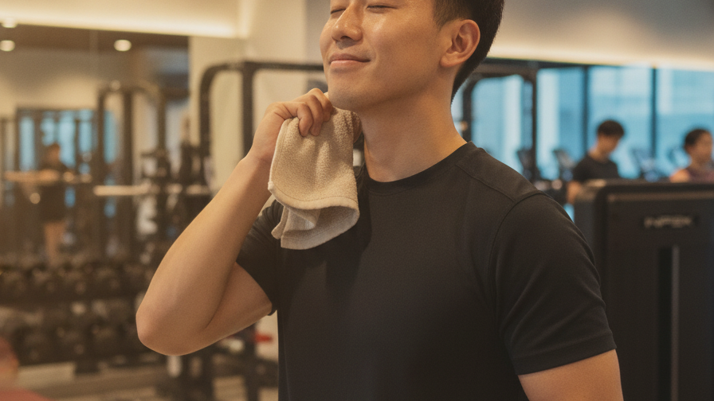
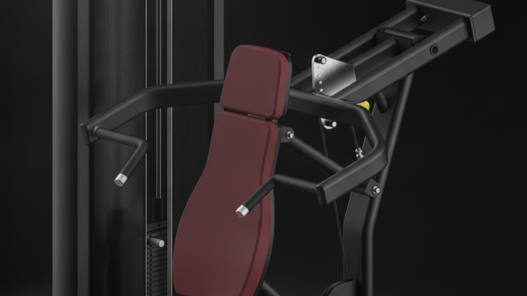
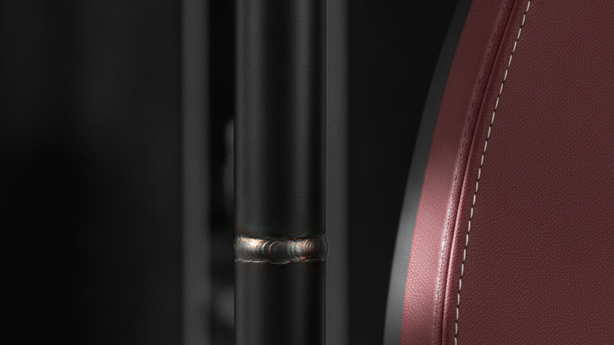
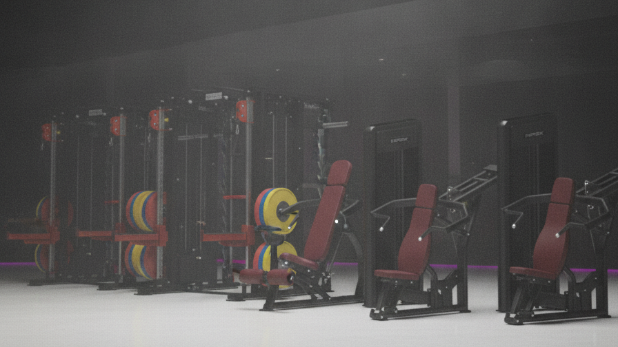

結論（今回の方針）
- 集客＝AI動画（本命）／機器＝ライト動画（別制作）に分離。まずは認知拡大の集客動画から。
- 約45秒・15シーンに拡張し、HPの特徴を全部のせ（24時間・駅前2分・壁一面フリーウエイト・ダンベル1〜50kg・日本初上陸INPEKの高品質マシン・豊富なラインナップ・初心者安心 ほか）。
- ★映画的コントラスト：実在の「小田原駅前の見慣れたビル」を入って7Fに上がると別世界の本格ジム。このギャップ＋地下道直結で「駅前・濡れず・すぐ」を伝える。
- 画角はエニタイムCM参考。主役は街のいろんな一般のお客さん＝誰でも通えるを映像で語る。
AI動画（本命・先行）
認知拡大／特徴もり込み15シーン／エニタイム画角／45秒＋30秒・15秒のブースト版
ライト動画（次段）
INPEK実機の製品美フィルム／素材提供(7月〜)後に本制作
冒頭フック（採用方向）ここで全部決まる（最初の2秒）
HPのメインコンセプト＝「日々の進化」を実感するジム（核＝①仕事帰りにリセット ②誰にも邪魔されず集中 ③目標へトレーニング）。この3つを"願い"のまま並べるのを超えて、"叶う約束(ベネフィット)＋INPEKの強みで裏づけ"に昇華します。
3コンセプト昇華 × 仲野メソッド（ベネフィット→根拠→オファー）

| HPの願い（before） | 昇華した訴求（after）＝叶う約束＋根拠 |
|---|---|
| 仕事帰りに、自分をリセットしたい | 仕事帰りの30分で、頭も体もリセット。（←24時間だから帰りに寄れる） |
| 誰にも邪魔されず、集中したい | 広い本格空間を、ひとりじめ。（←壁一面フリーウエイト＝待たない） |
| 目標に向かってトレーニングしたい | 本格マシンで、目標へ最短。（←日本初上陸メーカーの高品質マシン） |
フック（0:00-0:03）：0:00-0:02 左に3行を畳みかけ「仕事帰りの30分で、リセット。／ 広い本格空間を、ひとりじめ。／ 本格マシンで、目標へ最短。」→ 0:02-0:03「"日々、進化"できるジム。小田原駅前・24時間／（小）今なら月会費0円 ※要確認」
ナレ：「仕事のあとは、自分に集中する時間。」→「小田原駅前に、"進化"できるジム。」
なぜ超えるか：願望の羅列は"あるある"で止まる。願望→即・約束に変え、各約束をINPEKの具体的強みで裏打ち、ブランドの核「進化」で束ねてオファーで締める＝共感で終わらせず"行ける気"にさせる。
▼ 参考：他の冒頭案（比較用）
ターゲット呼びかけ
「小田原で、ジムを探している あなたへ。」Whoを名指しで自分ごと化。認知の入口が広い。
ベネフィット→限定オファー

「"続く"って、こんなに気持ちいい。」運動後の満足＝得られる未来から。v2の原型。
本編（S3以降15シーン）は共通。冒頭2秒だけ差し替えでA/Bテストも可。※数字（0円・限定200名）は最新をご確認ください。
① 集客AI動画 本編 絵コンテ15シーン・約45秒（S3以降は共通）
前半＝行きやすさ（日常→駅前ビル→入館→全景）／中盤＝設備の圧巻さ（フリーウエイト・ダンベル幅・高品質マシン・豊富さ）／後半＝初心者安心・24時間・多様な会員・入会しやすさ・CTA。実店舗＆実INPEK機に準拠、主役は一般客。
※ブースト用：30秒版＝S1・S3・S4・S5・S7・S10・S13・S15／15秒版＝S1・S4・S5・S13・S15。縦型(9:16)も本編から書き出し可。
参考動画（画角の参考）
エニタイムフィットネスCM この画角で作ります


超えるべきベースライン 現場でお見せした動画

② 機器紹介＝ライト動画（次段・ご参考）
集客とは分けて、INPEK実機（黒＋ワインレッド）を"作品"のように魅せる製品美フィルム。素材提供後に本制作。参考＝Technogym Personal Line。



ディレクションで確認したい点
- Q1. この方針（集客AI動画を先行・約45秒/15シーン／機器はライト動画で別制作）でよいか。
- Q2. 尺は45秒でよいか。ブースト用30秒・15秒／縦型(9:16)の要否。
- Q3. 実在の駅前ビル外観を動画に出してよいか（"駅前・地下道直結"の認知に有効）。出さず店内中心にするか。
- Q4. ラストのCTA（誘導先）：HP／電話／来店／LINE（複数可）。料金・キャンペーン数字の掲載可否と最新値。
- Q5. オーナー様のご出演／店舗の追加お写真のご提供（あればさらに実物に寄せます）。
⚠️ INPEKの原産国（HP『韓国発祥』／実際は中国）は動画に一切載せません。マシンの「INPEK」は御社ブランドのためOK。料金数字は最新確認後にテロップ化します。